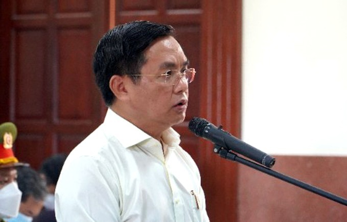

TP HCMCựu phó chủ tịch thành phố Trần Vĩnh Tuyến được tòa giảm một năm tù do có nhiều tình tiết giảm nhẹ. Sáng 15/6, sau một tuần xét xử và nghị án, TAND Cấp cao tại TP HCM chấp nhận đề nghị của VKS, tuyên giảm án cho ông Trần Vĩnh Tuyến, 57 tuổi, từ 6 năm xuống 5 năm tù về tội Vi phạm quy định về quản lý, sử dụng tài sản gây thất thoát lãng phí. Theo HĐXX, ông Tuyến là Phó chủ tịch thành phố - người quyết định có hay không cho phép Sagri chuyển nhượng dự án phường Phước Long B (quận 9) cho Tổng Công ty Phong Phú. Ở vai trò này, bị cáo biết việc chuyển nhượng là không có cơ sở do chưa thực hiện đúng quy định nhưng vẫn phê duyệt, gây thiệt hại 348 tỷ đồng. Với hành vi này, toà sơ thẩm xử phạt bị cáo 6 năm tù là phù hợp. "Tuy nhiên, bị cáo ăn năn hối cải; quá trình công tác được nhiều giấy khen, bằng khen; có đóng góp cho công tác phòng chống dịch bệnh; phạm tội do tin tưởng cơ quan chuyên môn cấp dưới... nên có cơ sở chấp nhận một phần kháng cáo", bản án phúc thẩm nêu lý do giảm án cho ông Tuyến. Ông Tuyến và các bị cáo nghe tuyên án sáng nay. Ảnh: Ngân Nga
Bản án sơ thẩm xác định, dự án tại phường Phước Long B, quận 9 được UBND TP HCM giao cho Sagri (100% vốn Nhà nước) quản lý. Ông Tuyến cùng các cán bộ đã thiếu sót trong việc thẩm định hồ sơ, tham mưu, ký duyệt cho Sagri chuyển nhượng dự án khi chưa thực hiện các bước theo quy định. Việc này đã tạo điều kiện cho ông Lê Tấn Hùng (59 tuổi, cựu tổng giám đốc Sagri) và cấp dưới hoàn thiện hồ sơ chuyển nhượng dự án.